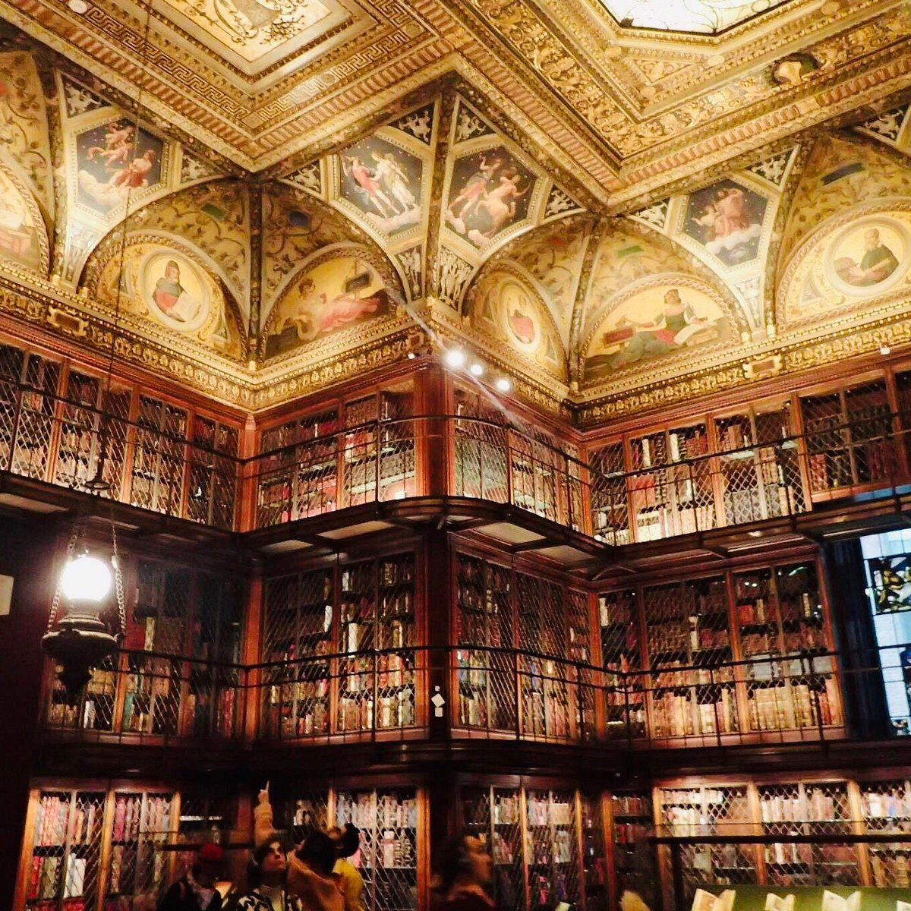
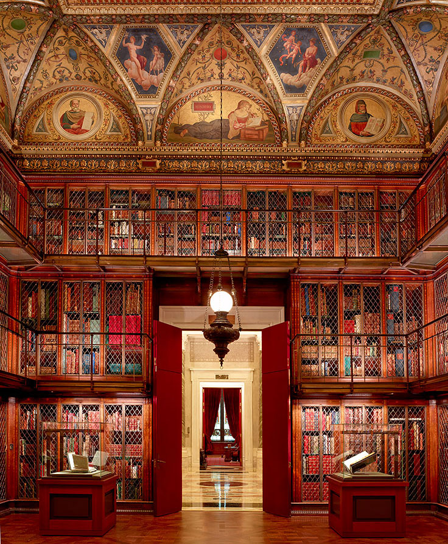
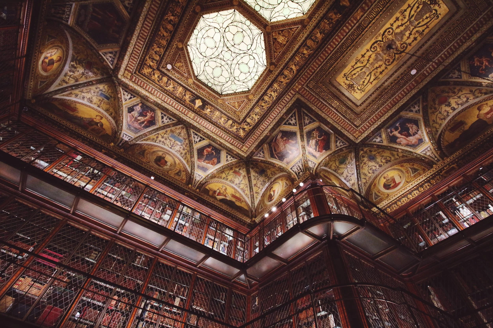

A stunning blend of art, rare books, and historic architecture, offering an intimate look into one of America’s greatest private libraries.
The Morgan Library and Museum is a unique cultural treasure in Midtown Manhattan, combining an extraordinary collection of rare books, manuscripts, drawings, and art with the grandeur of a Gilded Age mansion. Originally the private library of financier J. Pierpont Morgan, the museum showcases everything from medieval manuscripts and ancient artifacts to Renaissance masterpieces and original literary drafts by authors like Dickens, Austen, and Melville. Walking inside feels like entering a world where history, literature, and art intertwine—especially in the famous library room lined with towering bookcases, intricate woodwork, and vividly illuminated manuscripts.
The history of the Morgan begins with J. Pierpont Morgan’s passion for collecting. He commissioned architect Charles McKim to build a personal library in 1902–1906, intending it to house his growing collection of rare books and manuscripts. After Morgan’s death, his son, J.P. Morgan Jr., transformed the library into a public institution in 1924, honoring his father’s wish that the collection be shared with the world. Over time, the museum expanded both physically and intellectually, adding new galleries and welcoming major acquisitions that broadened its scope far beyond its original holdings. Today, it is one of the most respected research libraries and museums in the world.
The appeal of the Morgan lies in the combination of its breathtaking architecture and the sense of intimacy in its collections. Visitors aren’t just looking at exhibits—they’re stepping into a beautifully preserved Gilded Age interior where masterpieces live on shelves, in vitrines, and behind secret doors. It’s a place where you can see everything from handwritten letters by famous authors to early music scores, rare prints, and rotating exhibits that often highlight unexpected cultural connections. The museum feels warm, curated, and deeply personal, inviting visitors to savor the details.
The Morgan Library and Museum is significant to New York City because it preserves a major piece of the city’s cultural and intellectual heritage. It stands as a testament to the era when private collecting helped shape public access to the arts, and it continues to serve as a center for scholarship and exhibitions that enrich New York’s artistic landscape. Beyond its academic value, the Morgan adds depth and character to Midtown, balancing the city’s fast-paced energy with a place dedicated to history, beauty, and the written word. It's a reminder that New York’s cultural identity isn’t just about skyscrapers and modern art—it’s also about preserving the stories and works that shaped Western civilization.
Someone should go to the Morgan because it offers an experience that you simply can’t find anywhere else: the chance to stand inches away from history’s greatest documents, artworks, and literary treasures in a setting that feels like a jewel box. Whether you're a lover of books, art, history, or architecture, the Morgan gives you access to a world of creativity and knowledge that feels both magical and inspiring. It’s perfect for those who enjoy quieter, more reflective museum visits—and for anyone looking to discover something truly one-of-a-kind in Manhattan.
